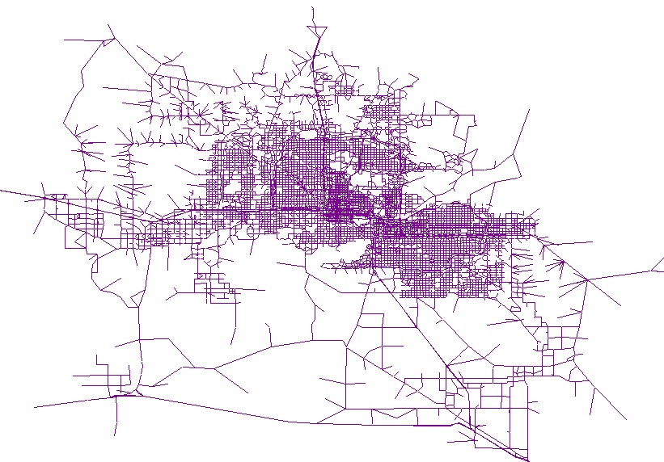

Edit This Page » (opens new window)
Transportation networks
More pages in this category:
Learn more about this circle at Transportation networks.
Transportation networks generally refer to a set of links, nodes, and lines that represent the infrastructure or supply side of the transportation. The links have characteristics such as speed and capacity for roadways; frequency and travel time data are defined on transit links or lines for the transit system. Transportation analysis zones are represented in the network by centroids, a subset of the nodes; and centroid connectors are links that provide access and egress to the system.
# Introduction
Transportation networks could be of several types for representing the infrastructure or supply of different modes. Highway and transit networks are a principal means by which the supply side of transportation is represented. A typical highway network will include links ranging from high speed, high capacity (e.g., freeways) to low-speed, low capacity (e.g., residential streets). Transit networks are a spatial representation of bus, rail, and other types of transit routes available in a region. Links will include fixed-guideway (e.g., passenger rail) to bus lines that operate in mixed-traffic on the roadway links.
While all models are representations of the 'real world', it should be noted that network models can be both very precise and accurate. The following quote puts this in perspective especially as it relates to the differences between the supply and demand side of models.
:
: "Traffic modeling is frequently described as being part science, part art. Modelling the base year supply-side -- the representation of the highway network today -- is the science part. It is frequently modelled with, literally, military precision using mapping data from GPS satelittes. This level of precision does not extend to the representation of the demand-side of the travel economy..."[^1]
# Network Types
# Highway Networks
Highway networks provide a representation of individual, connected links between intersections through the use of links and nodes. Links are often described by length, capacity, number of lanes, posted speed, and freeflow speed. The congested speed on any link may be calculated through the use of an appropriate volume-delay function (VDF).
# Transit Networks
Transit networks are also comprised of nodes and links. Nodes generally comprise bus or rail stops along transit routes and are spatially located by XY coordinates. Stop attributes may be attached to a node to describe the characteristics of the stop, typical dwell times, and frequency of vehicle arrivals at the stop. Links on the transit network connect consecutive stops. Further detail about each route often includes route fares, schedules, headways, and speeds. Other spatial data elements associated with transit networks include the locations and capacity of park-n-ride facilities, and access and egress legs or links for each zone. Intra- and intermodal transfer locations are also identified in transit networks.
# Other Networks
Non-motorized modes such as walking or bicycling are sometimes not represented in travel forecasting models. Hence, the networks for these modes would not included. The main reason for this exclusion is that most models were developed to address macro-level questions about the location or size of the roadway and transit network links (i.e., are new roads needed or what existing roads need to be widened). However, an emerging area of interest includes bike modeling, which requires a network that may include special attributes that influence route choice (such as street slope).
Freight networks can include both truck facilities and rail freight.
Super networks represent an integrated multi-modal network with the intention of providing a more comprehensive look at routes across all available modes of transport and access/egress patterns. The modal elements appear in multiple layers and are connected by artificial transfer links, which can represent a variety of costs. The private (car and bicycle) layers can be connected to the pedestrian layer where they are available and can be parked, and all origin and destination centroids are located on the pedestrian layer. [1]
# Current State of the Practice
Network Representation
Usually all freeways, expressways, principal arterials, minor arterials, and feeder/collector routes are included. Data on roadway characteristics are associated with each link. Current highway networks range in size from 4,200 links for small MPOs to more than 20,000 for large MPOs. [2] The detail of the network often reflects the size of the TAZs, the resources available to maintain the network, and the intended applications of the model. For example, Traffic simulation models might need detailed information about turning movements and traffic controls at intersections. In other words, Multi-resolution networks may need to be developed to support Multi-resolution models.

The transit network (if there is one) is represented as routes for the various transit systems in the metropolitan area. Some of these routes run on the highway network and share highway links, while others are on their own right-of-way. Transit networks are typically more complex than highway networks because of the multiple modes involved and the need to consider operating frequencies and schedules. The vast majority of MPOs that have rail transit within their area include the entire rail network in their transit model. More than 80 percent of all MPOs and 90 percent of large MPOs include at least 75 percent of available express bus miles in their transit network. All of the large MPOs that reported having local bus service include at least three quarters of the local routes in their network. In contrast, more than 60 percent of the small MPOs and 20 percent of the medium MPOs that reported having local bus service include less than three-quarters of local service miles in their network.[3]
Network Data Management
Transportation supply is often represented through highway and transit networks mapped and edited in a GIS database or travel forecasting software.
Some MPOs maintain master networks that provide project-level coding by build-out year, combined into one network or database. The master networks allow the modeler to more easily create networks for various future years and evaluate different scenarios.
Many MPOs keep meta-data on their network to track the person who added or edited a given segment, the date, and other key pieces of information. This is helpful for when there is a question about the way a network is coded.
Who codes the network? Some agencies have found that it can be problematic to let non-modelers (e.g., agency staff) edit the network. They may not understand the process and why certain information is needed, and inconsistencies may be created. That said, it’s important to have a visual way for the planning team to check the accuracy of the coding.
How often to update the network? A protocol should be developed for when the network is updated. Plans in a region can change frequently and it can be very challenging, and possibly unproductive, for the regional MPO network to keep pace.
# Developing a Network
Using geographic information systems (GIS), networks can be created that are built off survey and satellite mapping data that is accurate to within a few inches. This level of accuracy and precision, however, should be considered in the context of the demand model and what happens when demand and supply are brought together in trip distribution and trip assignment.
Transportation network data tends to remain relatively stable over time. Most models have existing transportation networks that must simply be updated to reflect new roadways, increases in roadway capacity (e.g., through the addition of travel lanes), or new transit services.
What is coded? A protocol should be developed to ensure consistency throughout the region in how the model network is coded. Many travel demand models are not sensitive to changes in signal timings, adding a center left-turn lane, etc. The modeling network could be a subset of the list of regional improvements in the plan.
Standards
There are various emerging standards for transportation networks. A few relevant standards include:
- OpenStreetMap - http://wiki.openstreetmap.org/wiki/Main_Page (opens new window)
- General Transit Feed Specification (GTFS) - https://developers.google.com/transit/gtfs (opens new window)
- Model Free - http://modelfree.org (opens new window)
- UNETRANS - http://ncrst.digitalgeographic.com/research/unetrans/first.html (opens new window)
- TIGER/Line - https://tigerweb.geo.census.gov/tigerwebmain/TIGERweb_geography.html (opens new window)
In addition, various transportation modeling software have their own standards for representing networks. A few examples include:
- MATSim (agent-based transport simulations) - https://www.matsim.org/about-matsim (opens new window)
- SUMO (open source traffic simulation suite) - https://www.eclipse.org/sumo/ (opens new window)
- AequilibraE (comprehensive Python package for transportation modeling) - http://aequilibrae.com/ (opens new window)
General Modeling Network Specification (GMNS)
Standard network definitions make it easier to share networks between organizations, software programs, and people. The General Modeling Network Specification (GMNS) [4] is a standard that aims to facilitate network tools and data sources among modelers. It is designed to be used in multi-modal static and dynamic transportation planning and operations models. See the GMNS GitHub project page (opens new window) for more information.
Data Sources
Several sources of network data are described in the Travel Model Validation and Reasonableness Checking Manual. [5] These sources could include direct field observations, transportation or transit planning agencies, aerial photography, online maps (Google Maps (opens new window), OpenStreetMap (opens new window)), commercial venders (ArcGIS, Navteq, Tele Atlas), GTFS, TIGER/Line Files (opens new window) from the Census Bureau, and others.
Reasonableness Checks
While network data does tend to be relatively stable, there can be a lot of detail and quantity of data associated with the networks that often require on-going editing and quality control. Most travel forecasting or GIS software programs contain tools to conduct a variety of error or reasonableness checks related to the accuracy and connectivity of the network. Automated processes that catch errors before a model run can save time.
# Visualization
The visualization of networks typically occurs through mapping specific variables or attributes. These attributes can be displayed statically or dynamically and can take 2-D or 3-D forms.
# Research Needs
Travel demand is influenced by the network that is supplied. This relationship needs to be better understood so that induced and suppressed travel effects can be directly modeled by feedback to trip generation and long-range land use forecasts. The presence and completeness of bicycle, pedestrian, and low-energy vehicle/neighborhood electric vehicle networks on travel demand needs to better understood to justify future investments in these modes.
# Online Network Repositories
Some online repositories for actual network files for research and modeling include:
- GMNS Small Network Examples - https://github.com/zephyr-data-specs/GMNS/tree/master/Small_Network_Examples (opens new window)
- OSM2GMNS - https://osm2gmns.readthedocs.io/ (opens new window)
- TransitLand - https://transit.land (opens new window)
- TransportationNetworks Test Programs (TNTP) - http://trb-networkmodeling.org/testdata (opens new window)
# References
van Eck, Gijsbert (2014) Model complexities and requirements for multimodal transport network design: Assessment of classical, state-of-the-practice, and state-of-the-research models, Transportation Research Board, 2014. ↩︎
SR 288-Metropolitan Travel Forecasting Current Practice and Future Direction, Transportation Research Board, 2007. ↩︎
- ↩︎
General Modeling Network Specification: Documentation, Software and Data (opens new window). ↩︎
Travel Model Validation and Reasonableness Checking Manual, Second Edition, Federal Highway Administration Travel Model Improvement Program, 2010. ↩︎